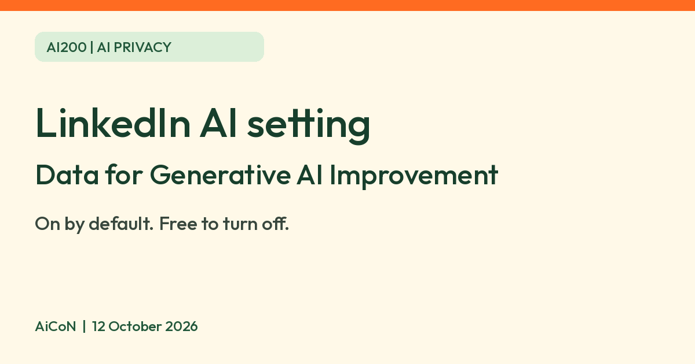

LinkedIn AI training setting: what it controls, what it does not, how to check it
LinkedIn says its "Data for Generative AI Improvement" setting is on by default. For the content-generating models covered by this setting, turning it off stops use of your LinkedIn data for training going forward, with the feedback exception explained below. It does not undo past training.

What it is
LinkedIn has a member setting called "Data for Generative AI Improvement". LinkedIn's help page says it controls whether your data is used to train or improve the generative AI models LinkedIn and its affiliates use to create content, such as suggested posts or messages. LinkedIn says the setting is on by default, and turning it off is the opt-out.
Is it free?
This is a member privacy setting, not a paid AI subscription. The official help page describes an opt-out in settings and gives no payment or paid-plan requirement; AiCoN did not test it in an account.
What turning it off does
- LinkedIn says that if you turn it off, it and its affiliates "won't use the data and content you provided to LinkedIn to train models that generate content going forward".
- You can still use LinkedIn's generative AI features. The help page says the setting only controls training, not whether the features work for you.
What it does not do
- It does not undo training that already happened. LinkedIn says opting out "does not affect training that has already taken place".
- It does not cover models used for other purposes, such as personalising your LinkedIn experience, or security, safety and anti-abuse. LinkedIn says so on the same page.
- It does not cover feedback you give. LinkedIn says that thumbs up or down, or text you type in feedback, may still be used to train its content-creating models. AiCoN advice: do not paste private details into feedback boxes.
- The page says the setting does not control use of your data while you or others use the generative AI features. It only controls training.
Who it applies to
The help page is written for members in general and does not name India. It does give special notes for members in the EEA, Switzerland and the UK, and a separate LinkedIn notice says that from 3 November 2025 it began using some data from members in the EU, EEA, Switzerland, Canada and Hong Kong, with an opt-out in settings. India is not named on these pages. Not finding an India exclusion is not proof that every Indian account has this setting or the same rollout. The notice says settings can vary by region because features are not offered globally at the same time. Check your own account. LinkedIn also says that if it has reason to believe you are under 18, your data is not used for this training even if the setting looks on.
How to check it
- Open your LinkedIn settings and look in the data privacy area for the setting called "Data for Generative AI Improvement". The exact menu path is not given on the help pages we read, and LinkedIn menus change, so look for that name.
- If it is on and you want to opt out, turn it off.
- Check again after major LinkedIn updates.
Limits to know
- The main help page says it was last updated about a year ago, and the update notice about 10 months ago. LinkedIn may have changed details since. Check the setting in your own account.
- We did not log into LinkedIn or test the setting.
- Opting out of this setting is only one choice. LinkedIn has other privacy settings, for example for ads, that we did not cover.
Frequently asked questions
Is the setting on by default?
Yes, per LinkedIn's help page it is on unless you turn it off.
If I turn it off, do I lose LinkedIn's AI features?
No. The help page says you can still use the generative AI features.
Does turning it off remove my data from models already trained?
No. LinkedIn says opting out does not affect training that has already taken place.
What changed since this post?
Official help pages rechecked 12 October 2026. Their displayed freshness labels remain about one year and ten months old. Kept the November 2025 notice regional, clarified that India is not explicitly confirmed, and retained the future-only scope and feedback exception. The exact account menu and your current setting were not tested.
Sources: LinkedIn: control whether your data is used to improve generative AI, LinkedIn and generative AI FAQs, Update to our Terms and data use. Checked 12 October 2026.